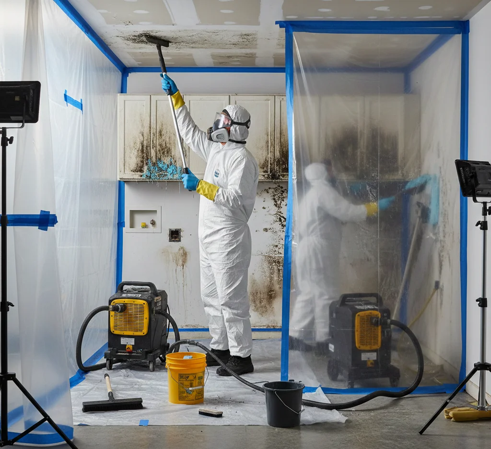

Mold Removal Cleaner provides certified mold inspection, removal, and remediation services across Miami, Orlando, Tampa, Jacksonville, and St. Petersburg. Our licensed specialists use advanced moisture detection, strict containment protocols, and eco-safe treatments to eliminate mold at its source. We deliver fast response, detailed reporting, and industry-compliant solutions for healthier residential and commercial indoor environments.
Protect Your St. Petersburg Home From Mold Threats
St. Petersburg sits on the Tampa Bay peninsula, surrounded by the Gulf of Mexico, Boca Ciega Bay, and Tampa Bay itself. Waterfront and coastal properties face constant mold risks due to high humidity, heavy rainfall, and afternoon thunderstorms. Tropical storms and the June–November hurricane season intensify flooding risks, creating ideal conditions for mold to spread quickly in homes and businesses.
Our St. Petersburg mold removal services tackle these challenges head-on. We remove mold safely from walls, ceilings, floors, and HVAC systems while containing affected areas to prevent cross-contamination. Homes in neighborhoods like Old Northeast, Snell Isle, and Historic Kenwood receive extra attention, as waterfront locations are particularly vulnerable to water intrusion and moisture buildup.
We combine certified expertise with Florida-specific solutions, ensuring your property stays safe, healthy, and mold-free. Whether you are addressing post-storm damage or preventing regrowth in high-humidity areas, our local team provides fast, reliable mold removal customized to Tampa Bay’s unique climate challenges.
CALL TODAY to schedule your St. Petersburg mold removal and ensure a safe, healthy environment.
Why Choose Professional Mold Services in Florida
St. Petersburg homeowners trust certified experts for safe, effective mold removal. Mold spreads quickly in waterfront homes and high-humidity areas, creating health risks and structural damage. Professional services ensure complete remediation, personalized to Tampa Bay’s tropical climate.
Certified Local Specialists
Our technicians hold state-recognized certifications in mold removal and remediation. They understand St. Petersburg’s unique challenges: coastal humidity, hurricane-season flooding, and high rainfall. Waterfront properties in Old Northeast, Snell Isle, and Historic Kenwood receive special care. Our expertise ensures mold is fully removed, preventing recurrence and protecting both health and property value. Homeowners can trust our team to handle even the most complex Florida-specific situations.
Advanced Removal Techniques
We use containment, HEPA filtration, and professional-grade treatments to safely remove mold from walls, ceilings, floors, and HVAC systems. Our approach limits cross-contamination while preserving your home’s structure. Tampa Bay’s humidity and storm-related water intrusion demand precise methods, and our trained team applies best practices to eliminate mold at its source, ensuring long-term safety and a clean environment.
Prevention and Maintenance Guidance
We do not just remove mold, we provide actionable strategies to prevent future growth. Recommendations include ventilation improvements, dehumidifiers, and flood prevention measures for low-lying or waterfront properties. Our guidance considers St. Petersburg’s tropical storms, afternoon thunderstorms, and hurricane-season risks, helping homeowners maintain a mold-free, healthy home year-round.
Secure Your Home’s Health Today
Contact our Florida experts for a free, detailed assessment.
We guide homeowners step by step, combining local expertise and certified methods to ensure mold is removed thoroughly and safely.
Step #1 Schedule Inspection and Assessment
We begin with a detailed consultation to understand your property type, recent leaks, flooding, or storm damage. Same-day or next-day inspections are available across St. Petersburg neighborhoods like Old Northeast, Snell Isle, and Historic Kenwood. Waterfront homes, low-lying areas, and properties near Tampa Bay or Boca Ciega Bay receive extra attention due to higher humidity and flood risk. This initial assessment identifies hidden moisture sources, evaluates structural vulnerabilities, and prioritizes areas most likely to harbor mold. By understanding your home and environment upfront, we create a focused inspection plan that saves time and ensures comprehensive coverage for all potential problem zones.
Step #2 Perform Thorough Mold Removal Inspection
Our certified technicians conduct an in-depth inspection using visual checks, moisture meters, and thermal imaging. Crawl spaces, attics, basements, HVAC systems, and other hidden areas receive close attention. Waterfront and coastal homes in St. Petersburg are especially susceptible to water intrusion, high humidity, and tropical storm runoff, making early detection critical. Identifying both visible and hidden mold ensures remediation targets the root causes rather than surface growth. This process prevents spread into walls, floors, ceilings, and air systems. Homeowners gain a clear picture of mold risks, moisture sources, and areas needing remediation before small problems become costly structural or health hazards.
Step #3 Contain And Remove Mold Effectively
Once identified, we isolate affected areas to prevent cross-contamination and protect unaffected spaces. Using professional-grade treatments, HEPA filtration, and advanced equipment, we remove mold from walls, floors, ceilings, vents, and HVAC components. Waterfront properties in Snell Isle or Historic Kenwood require extra care due to proximity to Tampa Bay and Boca Ciega Bay, where moisture levels remain high. Our certified team follows strict protocols to maintain structural integrity while eliminating mold at its source. Containment, careful removal, and specialized treatments ensure thorough remediation, preventing regrowth and protecting homeowners from potential health risks associated with prolonged mold exposure in Florida’s humid climate.
Step #4 Provide Post-Removal Recommendations And Prevention
After mold removal, we provide homeowners with actionable guidance for long-term protection. Recommendations include ventilation improvements, dehumidifier placement, moisture monitoring, and flood mitigation strategies. Waterfront and low-lying properties near Tampa Bay or Boca Ciega Bay benefit from storm preparedness tips and proactive measures against high humidity and hurricane-season rainfall. Our team also documents the entire remediation process, providing detailed reports, photos, and next-step guidance. Homeowners can track progress, make informed maintenance decisions, and prevent future mold growth. By combining removal with education and preventative solutions, we ensure a safe, mold-free environment in St. Petersburg homes year-round.
Complete Mold Removal Services for St. Petersburg Properties
We offer a complete range of mold removal services to protect homes and businesses from St. Petersburg’s high humidity, coastal exposure, and storm-related water damage. Our certified team handles every type of mold problem with precision and care, ensuring long-term protection for waterfront and low-lying properties.
Residential Mold Removal Experts
We safely remove mold from walls, ceilings, flooring, and hidden areas in homes. Waterfront properties in Old Northeast, Snell Isle, and Historic Kenwood receive special attention. Our methods prevent cross-contamination and stop mold regrowth, protecting your family’s health and your property’s value.
Commercial Mold Remediation Solutions
We provide fast, thorough mold removal for businesses across St. Petersburg. Our strategies minimize disruption to operations while eliminating mold caused by leaks, flooding, or storm damage. Tampa Bay’s coastal humidity is factored into every remediation plan.
Moisture Control and Prevention
Our team identifies sources of excess moisture and recommends solutions such as dehumidifiers, improved ventilation, and water-resistant barriers. These steps prevent mold recurrence in high-risk areas, especially waterfront and low-lying neighborhoods.
HVAC Mold Treatment Services
Air conditioning systems can hide mold and spread spores. We clean, disinfect, and prevent microbial growth in ducts, coils, and vents, improving indoor air quality in humid St. Petersburg homes.
Storm and Flood Response
Following heavy rainfall or tropical storms, we assess water damage and prevent mold from spreading. Rapid response is critical for waterfront estates, low-lying neighborhoods, and properties near Tampa Bay.
Post-Remediation Cleanup Services
We restore affected areas to pre-mold condition, including surface cleaning, debris removal, and odor neutralization. Homeowners gain a safe, healthy environment while protecting structural integrity and property value.
Rapid Response Emergency and Specialty Mold Services
Mold emergencies in St. Petersburg require fast, expert attention. Coastal humidity, heavy rainfall, and hurricane-season flooding accelerate mold growth, threatening both property and health. Our certified team provides urgent mold inspections, containment, and remediation to stop mold spread quickly.

Post-Storm Damage and Water Intrusion Response
We respond to post-storm damage, water intrusion, and severe infestations. Waterfront properties, low-lying areas, and historic homes receive immediate attention to prevent extensive damage. Using advanced equipment and professional-grade treatments, we safely remove mold from walls, floors, ceilings, and HVAC systems.
Specialty Mold Services
Special services include high-risk property monitoring, rapid containment, and collaboration with insurance providers for documentation. Homeowners receive actionable guidance for ventilation improvements, humidity control, and storm preparedness.
Why Choose Our Emergency Team
Our emergency response ensures that mold is addressed efficiently, minimizing disruption, cost, and long-term health risks. Whether it’s a minor mold outbreak or post-hurricane cleanup, our St. Petersburg team delivers fast, reliable solutions customized to local climate challenges, giving property owners confidence and peace of mind.
Mold Can Spread Fast, Call now
Delaying inspection can risk your health and property.
Our certified team combines expertise, local knowledge, and advanced techniques to deliver trusted mold services in Florida. Here are four reasons homeowners rely on us:
Certified Mold Experts
Our technicians hold state-recognized certifications for mold inspection and removal. Training ensures safe containment, effective remediation, and long-term prevention. Homeowners can trust that every project follows industry best practices for health and safety.
Local Climate Knowledge
We understand Tampa Bay’s humidity, hurricane-season flooding, and storm patterns. Waterfront and low-lying properties, including neighborhoods like Old Northeast and Snell Isle, benefit from customized strategies that address Florida-specific mold challenges.
Advanced Technology Usage
We use thermal imaging, moisture mapping, and air quality testing to detect hidden mold. Early detection prevents costly repairs and ensures remediation targets the root cause, not just visible growth.
Comprehensive Customer Support
From initial consultation to post-remediation guidance, we provide clear communication, detailed reports, and actionable advice. Homeowners gain peace of mind knowing their St. Petersburg property is protected year-round from mold.
Do you provide mold services in all Florida cities?
Yes, we serve homeowners and businesses statewide. Our certified teams handle inspections, remediation, and prevention in Miami, Orlando, Jacksonville, Tampa, St. Petersburg, and surrounding areas.
How much do mold removal services usually cost?
Pricing depends on property size, mold severity, and moisture levels. After inspection, we provide a clear written estimate so homeowners know costs upfront with no hidden fees.
How long does a mold inspection typically take?
Most inspections take 2–4 hours. Larger homes or commercial properties may require extra time, especially when crawl spaces, attics, or multiple floors need thorough assessment.
Do you offer guarantees for your mold services?
Yes, all remediation comes with a satisfaction guarantee. We ensure mold is fully removed and provide advice to prevent future growth, giving homeowners peace of mind.
Can you handle emergency mold problems in St. Petersburg?
Absolutely. Our emergency team responds quickly after storms, leaks, or flooding. Same-day or next-day service is available for high-risk waterfront and low-lying properties.
Are your mold inspections safe for families and pets?
Yes, certified technicians follow strict safety protocols, using non-toxic treatments and containment measures to protect children, pets, and residents during inspection and mold removal.
Take Back Control of Your Home’s Air and Safety
Do not wait for hidden mold to compromise your property or your family’s health. Our certified St. Petersburg team delivers fast, reliable mold inspections, removal, and prevention services specifically designed for Florida’s high humidity, coastal exposure, and hurricane-season challenges.
Waterfront estates, historic homes, and low-lying properties are particularly vulnerable, and our experts provide customized solutions to stop mold growth before it spreads.
Schedule your free, no-obligation estimate today. Our team offers clear guidance, transparent pricing, and a step-by-step plan to protect your home or business. Early detection prevents costly repairs, preserves property value, and ensures a healthier indoor environment for you and your family.
Every property is unique, and we address neighborhood-specific challenges across St. Petersburg, including Old Northeast, Snell Isle, and Historic Kenwood.
Do not wait—take action now to secure your property and enjoy peace of mind with our trusted, certified mold services.